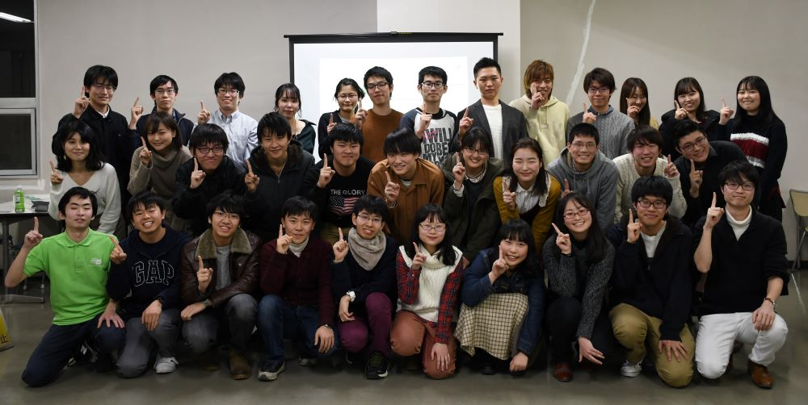

学生委員会新メンバー大募集！！
このホームページ、及び新歓企画を運営しているのは 名古屋大学生協学生委員会 という団体です。
学生委員会の新歓企画と活動について紹介します。
※「SC」とはStudent Committeeの略で、学生委員会の別名です。
名古屋大学生協学生委員会は、名古屋大学生協の組織委員会として、組合員(≒名古屋大学の学生の皆さん)がよりよい大学生活をおくれるように、
おもに5つの活動を行っています。そのどれもが、規模が大きくやりがいをもって活動できることは間違いありません。
※ 写真は2019年度以前の活動の様子です。
【総代活動】
組合員の代表である総代の活動をサポートします！
【オープンキャンパス】
高校生に向けてオープンキャンパスの企画運営を行います！
【共済活動】
大学生の「もしも」に対応する共済に関する活動を行います！
【新学期活動】
新入生に向けて企画の運営や冊子の作成などを行います！
【Me~dia】
組合員向けの機関誌を一から作成します！

▲ 学生委員会マスコットキャラクター「メディ・ベア」
詳しい活動内容はこちらをご覧ください！

学生委員会に興味を持ったら、まずはこの企画へ！
教科書販売等ガイダンスに運営側として携わることができる機会です。
教科書販売等ガイダンスは終了しました。
学生委員会のことを全く知らない方へ、私たちのことを紹介します！ ふらっと参加してみてはいかがでしょうか？
○日時
4/12(月), 4/14(水), 4/20(火), 4/22(木)
各日 16:30~
学生委員会の活動を体験してみませんか。個性豊かな学生委員メンバーも必見です！
○日時
4/17(土), 4/24(土)
各日 13:00~16:00
申込はこちらから!
Copyright (C) 2021 Nagoya University Co-op Student Committee.